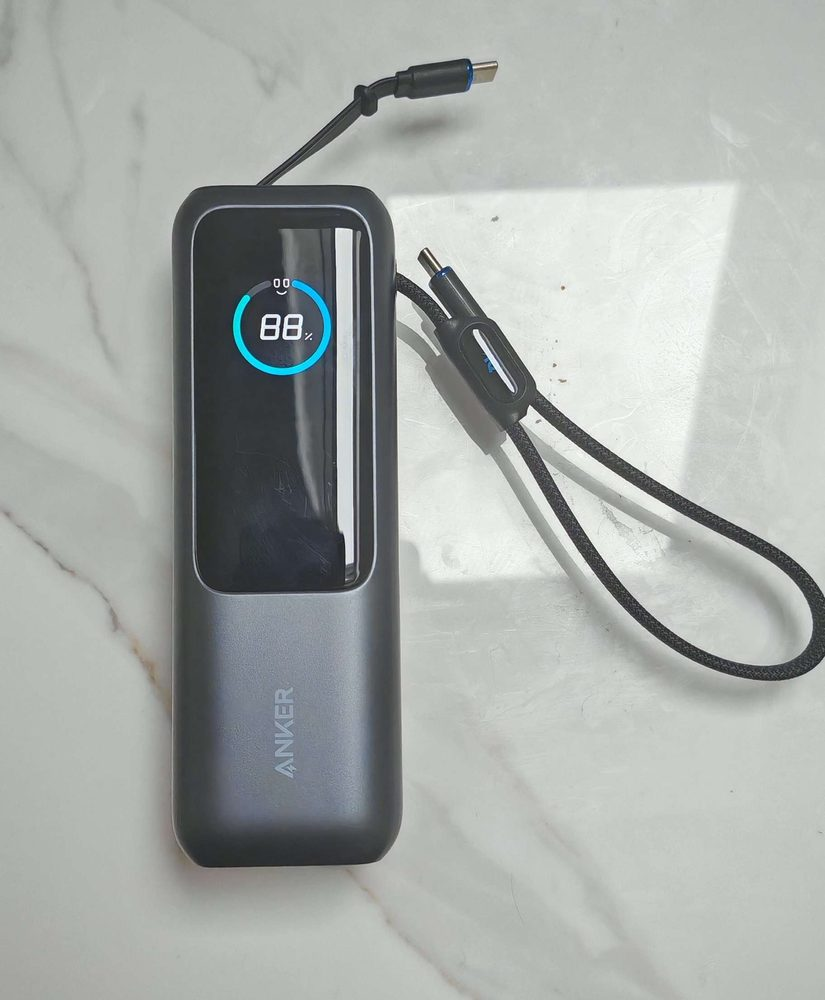
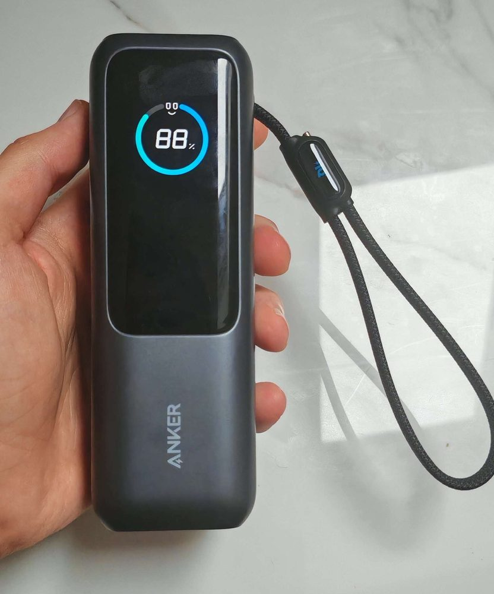
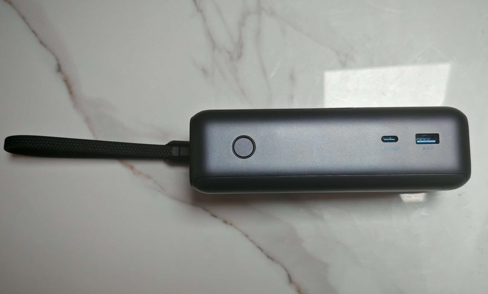

Three Anker packs for a long-haul trip, compared on capacity, total output and how many devices charge at once. Airlines limit power banks by watt-hours, so read the figure printed on the bank before you fly.
Top picks
1. Anker Power Bank 25000mAh Travel Essential (165W Triple USB-C) - Best Overall
SPP Score: 9.4 / 10 - 25000mAh with 165W across three USB-C outputs and built-in retractable cables. Our all-round pick.
Capability 9.8/10 - Versatility 8.5/10 - Build 9.4/10 - Value 8.9/10 - Fit 9.8/10
Fit for this guide: A long-haul bag wants one pack for every device, and this one has 25000mAh behind three USB-C outputs.
Every pick here is scored out of 10: four marks rate the product and are the same in every guide, and the fifth rates its fit for this guide - how we test and score.
Hands-on We own this one and it is the bank we take on long flights: two built-in retractable USB-C cables plus a third USB-C port cover a phone, a tablet and a laptop at once, and it has held up to daily use and travel without wear.



With the cables built in, there's less to pack and less to leave behind.
Pros
- ✓ 25000mAh, the most capacity of the three picks
- ✓ 165W total output, per Anker's listing title, across its three USB-C outputs
- ✓ Two built-in retractable USB-C cables
Cons
- ✗ Larger and heavier than a slim 10000mAh travel pack
- ✗ The 165W is a total, not a per-output rating, so three devices charging at once split it
Who it's for: Long-haul travellers who want one bank for every USB-C device in the bag.
Who it's not for: Light packers who only carry a phone and want the smallest possible bank.
2. Anker Power Bank 20000mAh 87W (Built-in Cable) - Best Budget
SPP Score: 9.0 / 10 - 20000mAh, with 87W shared across three outputs, one of them a built-in USB-C cable. Our value pick.
Capability 9.8/10 - Versatility 8.0/10 - Build 8.9/10 - Value 8.9/10 - Fit 8.9/10
Fit for this guide: A built-in USB-C cable and 87W to share cover a long trip from a 20000mAh pack.
Anker's own page says it can "Distribute 87W across three devices": the built-in USB-C cable, a second USB-C port and a USB-A port. The attached cable is the one lead you can't leave at home.
Pros
- ✓ 87W total output, shared across three devices at once, per Anker
- ✓ Built-in USB-C cable plus a spare USB-C and a USB-A port
Cons
- ✗ The lowest total output of the three picks, so it has the least to share when several devices charge at once
- ✗ The cable is built in, so a frayed lead is not something you can swap out
Who it's for: Flyers who want 87W to share and a built-in cable in a 20000mAh pack.
Who it's not for: Travellers who need the very highest charge speeds or the smallest, lightest bank.
3. Anker Prime Power Bank 20100mAh 220W - Best Premium
SPP Score: 8.7 / 10 - 20100mAh with 220W total output and app control. Our pick for maximum capability.
Capability 9.8/10 - Versatility 8.0/10 - Build 8.9/10 - Value 8.9/10 - Fit 8.0/10
Fit for this guide: 220W total and app control go beyond what one trip needs; Anker's listing title calls the pack TSA-Approved.
Anker's maker page gives the Prime "220W Total Output Power" across two USB-C ports and a USB-A port, and its listing title adds app control.
Pros
- ✓ 220W total output, the highest of the three picks
- ✓ App control, per Anker's listing title
Cons
- ✗ A 20100mAh cell holds well under the 25000mAh winner's, so a laptop-and-tablet day leaves less in reserve
- ✗ No built-in cable, unlike the other two picks, so every lead has to go in the bag
Who it's for: Multi-device travellers who want 220W from one pack and an app to manage it.
Who it's not for: Phone-only travellers - a 220W pack is overkill for a single handset.
Quick verdict
For most long-haul travellers, the Anker Power Bank 25000mAh Travel Essential (165W Triple USB-C) is the one to pack: the most capacity here, with its cables built in. The Anker Power Bank 20000mAh 87W (Built-in Cable) fits 87W and its own cable into 20000mAh. The Anker Prime Power Bank 20100mAh 220W adds app control to a 220W pack.
How we chose
We read each pack's capacity, total output and ports from Anker's listings and maker pages, then asked one question of each: can it keep several devices going through a long journey? The Travel Essential is the one we own; the other two are judged on Anker's published figures.
FAQ
Q: Can I take a power bank on a plane in my hand luggage? A: Yes, and only there: the UK Civil Aviation Authority says power banks "must only be carried as carry-on baggage", never in the hold. The same page allows "power banks up to 100 Wh rating (lithium ion)" without airline approval; our power bank rules for UK flights explainer covers the larger sizes and how many banks each passenger may carry. US flights follow the same line: the Federal Aviation Administration keeps spare lithium batteries, power banks among them, in "carry-on baggage only" and caps each at "a rating of 100 watt hours (Wh) per battery"; your airline can approve up to two larger spares of up to 160 Wh each.
Q: What capacity power bank do I need for a long flight? A: 20000mAh gives a 4000mAh phone about four full charges, by the sum in our how many charges from a 20000mAh power bank explainer; 25000mAh earns its extra weight when a tablet or laptop shares it. For everyday use away from flights, see our 20000mAh power bank guide. If a short hop only needs the phone topped up once, a 10000mAh pack will do the job.
Q: Can a power bank charge a laptop on a flight? A: Not on board under UK rules: the Civil Aviation Authority says power banks "should not be used to recharge a portable electronic device while on board the aircraft", and airlines set their own rules too, so check yours. The bank's job is the rest of the journey, from a layover to the hours after landing, and there its output has to cover the laptop. Apple lists a "140W USB-C Power Adapter" for the 16-inch MacBook Pro's fastest charge, while Anker caps the 87W bank at "up to 65W" for a single device, so a large laptop charges from it more slowly than from its own adapter. For a guide built around laptops, see our best power bank for laptops picks.
More questions, answered in full
- Do You Need A Voltage Converter For Your Charger?
- How Long Does A Power Bank Take To Charge?
- Why Does My Power Bank Turn Off?
Affiliate disclosure: This page contains affiliate links. As an Amazon Associate we earn from qualifying purchases, at no extra cost to you. See our disclosure page for details.